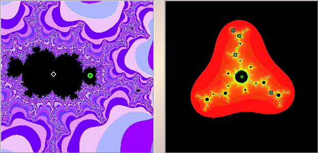

|  |
| The left window shows the magnification, the white diamond indicates the c-value for Julia set shown in the right window. |
| In the right window, shift-click or right click near |
| We obtain a |
| Click the green circles to see the corresponding cycle. |
Return to Samples.